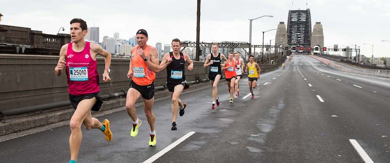

Good day folks! I’m Dilip
I live in Sydney, Australia
I live in Sydney, Australia
I am passionate about learning and applying digital technology to solve problems. I build, test and deploy awesome apps that adds value to everyday lives. I also blog and enjoy writing. I use my spare time in building side projects on both mobile and web.
I’ve been working in technology since 2001. As a software engineer, I have worked on .NET, C# and Java on web and desktop applications. I have been more focused on automated testing since 2006. Although, I have done tons of coding as a test engineer, I feel its not enough! I want to get back to core development where I contribute to awesome products from day one. I am excited that I am learning both mobile and web technologies with Treehouse.
I have only one goal. Build something every week. Learning is only a side effect of it. It's time to master the web. Let's get mastery over:
I’d like to use my skills not only commercially but also for social service. There are so many social, economic and political problems in the world. I want to put my digital skills to use for some great cause!
 When I am not on my computer, I am running outdoors! I love sweating it out in nature and running is my favorite way to do it. Running also calms my mind and bring me back in tune with this large existence. Sydney has some of the best locations for running with stunning views. Sydney hosts number of running events each year. My favorite running event is Blackmores Marathon.
You haven't run a marathon until you have run Sydney Blackmores!